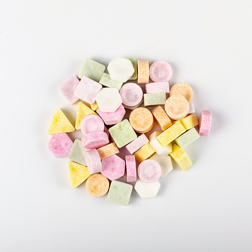

一夜漬けグッズ
一夜漬けで使えるグッズを2つ紹介したいと思います。
コーヒー

一つ目は、コーヒーです。「エナジードリンクじゃないの？」と疑問に思う人もいるかと思いますが、コーヒーはエナジードリンクより覚醒作用が強く、カフェインが多く入っています。ミルクや砂糖などで味を自分好みに変えることができるのでおすすめです。
ラムネ

2つ目は、ラムネです。ラムネは他のお菓子よりもブドウ糖を多く含んでいます。ブドウ糖は、摂取することで脳に栄養が供給されるため、脳の活性化や疲労回復といった効果があります。そのため、ラムネは手軽に疲れた脳にエネルギーを供給できるのでおすすめです。